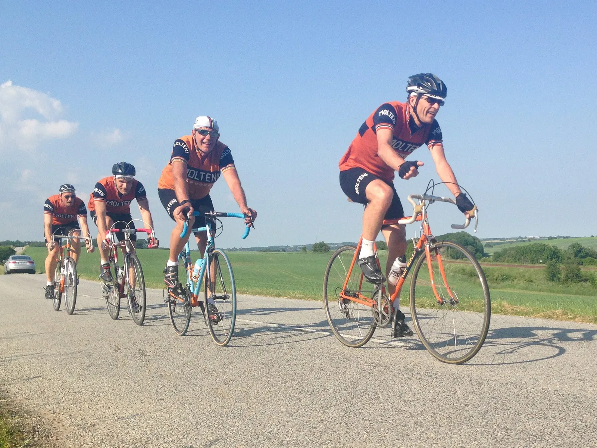

Løbsberetning: DGI Holdløb Tilst 2016

Squadra Molteni fortsætter de minutiøse forberedelser frem mod årets Retro-DM til DGI Holdløb Hovedgård d. 22 juni. I går var det orange eksprestog til Holdløb Tilst, for at finpudse de sidste detaljer.
Ruten og vejret var det samme som sidste år, hvor holdet kørte ind på en 13. plads, 3×11 km. i let kuperet terræn og flot solskin. 13. pladsen skulle forbedres, og det trofaste hold var tilbage i vante opstilling:
- Per “Le capitaine” Sandahl
- Eigil “Delgado” Leegaard
- Grane “Wunderbein” Maaløe
- Niels “Il direttore” Bjørnsteen
- Kasper “Il motore” Sørensen
21 hold stod klar på startstregen og blev sendt af sted som perler på en snor, men blot 30 sekunders afstand. Squadra Molteni som nummer 13. Det måtte naturligvis betyde mange overhalinger. Holdet hentede da også det forankørende hold i rutens andet sving. Her tabte Kasper også sine pilotbriller, der måtte efterlades på asfalten.

X-Bus bremser eksprestoget
Desværre var en blå bus kort forinden årsag til at holdet måtte bremse helt op, og i lighed med gylletanker-episoden i Lund, vurderede Capitaine de route, Per Sandahl, at det havde kostet holdet omkring otte minutter.
Det skulle vise sig, lige præcis at have været nok til at tage sejren. Korruption? aftalt spil? Sammensværgelse? Protesterne blev afvist, men Midttrafik kunne efterfølgende afvise, at de havde en rutebus i området på det givne tidspunkt.
Samarbejdet gled som symaskineolie
Niels Bjørnsteen havde smurt benene helt rigtig ind, og tog en ordentlig dingerføring på en kvart omgang. Det gav moral og på anden omgang blev der givet fuld gas.
Samarbejdet kørte som smurt i tynd symaskineolie, flere hold blev hentet, men hen mod slutningen af 2. omgang måtte Squadra Molteni også se sig passeret bagfra.
Per Sandahl trådte i karakter på turen anden halvdel, og sørgede for at tempoet blev helt konstant. Grane beviste at han ikke kun har sprinterbenene skruet rigtig på, og hans tempoben var uundværlige, når farten lige skulle have et hak op.
Sidste omgang – brillerne blev reddet af en flagvagt
Ud på sidste omgang var Niels i akrobatisk stil, og i fuld fart, nede og samle Kasper efterladte solbriller op fra asfalten. Desværre fik han ikke helt fat i dem, og tabte dem igen. En venlig flagvagt indleverede dem efter løbet.
Det gav dog en smule splittelse i feltet, da takken fra Kasper, var at skrue tempoet i vejret, lige netop som Niels havde hænderne plantet på jorden.
På opløbsstrækningen blev Squadra Molteni endnu engang hentet bagfra. Denne gang af et brusende felt bestående af fire hold i formation. Nok et resultat af den korte afstand mellem holdene, men det ser altså ikke godt ud til et holdløb, at fire hold buldrer over stregen samtidig.
Det blev til en placering som nummer 8, og en tid på 52:55 en klar forbedring fra sidste års tid på 54:27. I mål stod torta mama selvfølgelig klar med lækker frisk citron-sommerkage.
Den alvorlige del af sæson nærmer sig, og årets store mål ligger nu indenfor overskuelig fremtid. De kommer som tænder på den store klinge: Retro-DM i holdløb d. 22. juni, Molteni Sprinten d. 26. juni og La Marmotte d. 2. juli.